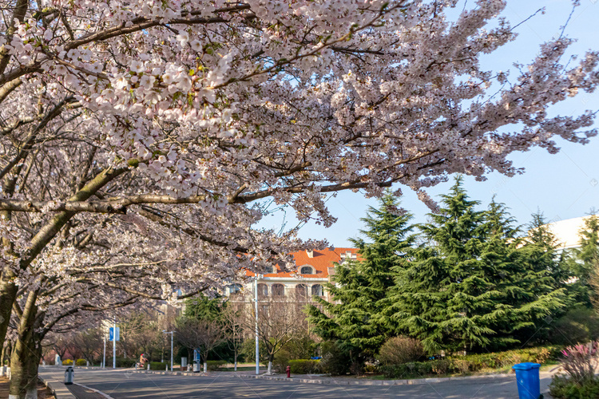
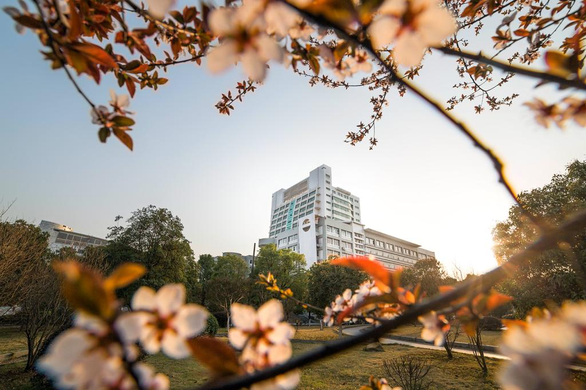

春风拂过校园的每一个角落，唤醒了沉睡一冬的生机。图书馆前的玉兰花率先绽放，洁白的花瓣在阳光下泛着温润的光泽，像一群停在枝头的白鸽。沿着林荫道往前走，两侧的柳树抽出了嫩黄的新芽，柔软的枝条垂在水面上，在人工湖里漾开一圈圈涟漪。湖边的草坪冒出了鲜嫩的绿意，三三两两的学生在草坪上读书、聊天，享受着春日的惬意。实验楼后的樱花园是春日里最动人的风景，粉白的樱花如云似霞，开得热烈而烂漫。每当春风吹过，花瓣便如雪般飘落，形成一场浪漫的樱花雨，落在同学们的发梢、肩头，也落在青春的记忆里。校园里的每一处，都在春日里舒展着生机，诉说着独属于我们的校园故事。

